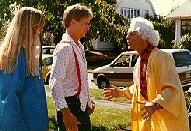
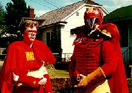
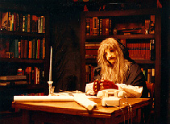

What's Ryan Watching aka Ryan's As-Yet Untitled SF Program was a ten minute compilation of material from my movies plus new satires. The object was to package it for a "video magazine" as a humor segment, but sadly the magazine never got off the ground. The idea of the series (which I admit was shameless ripped-off from an Eddie Murphy-produced pilot called What's Alan Watching?) was I would be sitting in my apartment and all sorts of strange science fiction shows would appear on my television that supposedly had been modified by my Invisible Roommate Paul.

The segments include: A parody of Back to the Future with Michael Santo (Star Trek: The Pepsi Generation) as Doc Brown (left, with Krystal Kaald and Lance A. McDonald); Captain Commie
(Matt Parsons, right, with Randy Gordon as "Buddinski, the Boy Bolshevik") -- which unfortunately really dates this movie -- but hey, it was 1989 when we made it!; a send-up of Beauty and the Beast that asked the question, "Are they ever going to kiss?"; clips from Star Trek: The Pepsi Generation, Broken Doors, an Elivra movie we did for a Norwescon, and A TARDIS Home Companion.This was my first movie to be mixed in stereo sound. The set for the Beauty and the Beast parody took a week to build, went way over budget (those shelves were real and built from scratch -- I later sold them off to help pay for the movie!), but we took advantage of it to tape several

different parodies of the series which have never been shown but hopefully someday will see the light of day. Gary Watts (left, as "Bincent") was in the makeup for nearly five hours in a mask that was originally made for Jeff Harris (Mystery Science Theater 3000), and complained his nose was sore for three days afterwards! Once again, like the fall of communisim, real-life events caught up with us and the "will they or won't they?" aspect of the real Beauty and the Beast was resolved when Linda Hamilton's character gave birth to Vincent's son.What's Ryan Watching
10 minutes. Betacam. Filmed and released September 1989.
Cast. . . Ryan K. Johnson as himself, Michael Santo as Doc
Brown, Lance A. McDonald as Barty, Krystal Kaald as Jenniker,
JoAnne Kirley as Elvira, Darrell Bratz as Donahue, Matt Parsons
as Captain Commie, Randy Gordon as Buddinski, T. Brian Wagner as
the Jehovah's Witness, Karl Krogstad as the Doctor, Henry
Gonzalez as the Interviewer, Jeff Harris and Ford Thaxton as
themselves, Pam Johns as Cathy, Gary Watts as Bincent, Michael
Santo as Picard, Julia Mueller as Ya Har.
Written, Produced and Directed by Ryan K. Johnson.
Back to Ryan's
Homepage
Escape From Seattle | Kill Roy | Doctor
Who | Star Trek: The Pepsi
Generation
What's Ryan Watching | The Wolfe
Project | Mystery Science Theater
3000
Have I Got News For You | The 2001 Movies | Norwescon
Movies | Meltdown